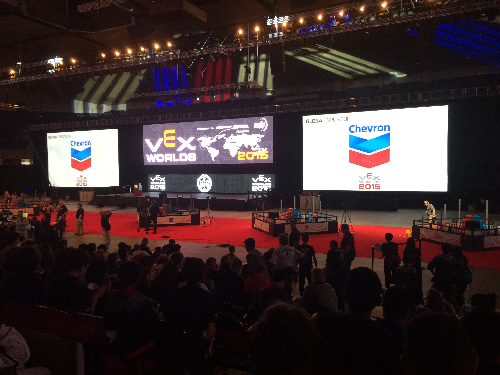
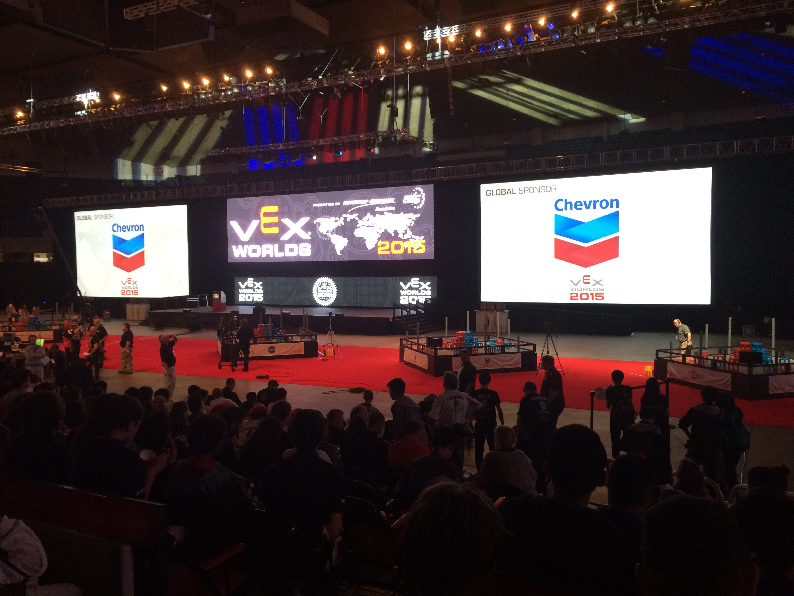

My Unbreakable Bond with Robots
I find immense joy in tinkering with robots, for it's not merely a journey of learning and exploration, but a path of self-discovery and the forging of genuine connections.
In 2005, I joined a robotic competition team for fun and had my first taste of competitive robotics in Shenzhen. The event was a robot soccer competition where two teams competed to build and program robots with embedded control centers to push an infrared ball into each other's goal. Since I was inexperienced, my role was that of a maintainer, responsible for ensuring the robot was charged and all the sensors were working well. Despite achieving third place in the national competition, I felt a deep sense of sorrow as I always aimed to be the very best.
In 2007, I became fascinated by another robot competition called First VEX Challenge (FVC), now known as VEX. VEX robots are much larger, typically 18 inches in each dimension, and built using metal materials in a complex design. What intrigued me the most was the challenge of programming the robot to autonomously achieve specific goals and then skillfully driving the robot to complete the rest of the game. It felt like playing a real-life video game, and I couldn't resist being captivated by it.

In 2009, I was fortunate to take part in the VEX World Championship held in Dallas. This event brought together the finest competitors from around the world to compete for the world champion title. The dazzling field illuminated by lasers, the enthusiastic competitors and my love for robots fueled my determination to one day win a world title myself.
The road was tough.
Over the next 10 years, things didn't go as planned. In 2010, my parents forbade me from attending the event due to my poor academic performance. In 2011, my team was mistakenly registered in the high school category, making it difficult for us to compete against more experienced opponents. Despite my school winning the title in those two years thanks to our instructor's excellent mechanical design, I felt like a lost puppy, unable to contribute much. In 2012, I finally made to the semi-finals with my teammates together, but we're defeated because of a mechanical failure. By 2013, as I was going to graduate, I thought I wouldn't have any chance to compete and realize my dream.
In high school, I surprisingly found that I could still compete in the VEX competition. However, even reaching the world championship was challenging without experienced instructors' support. Over time, I shifted from title obsession to enjoying the learning experience with friends and robots. In 2015, as team leader for the first time, I organized and guided inexperienced teammates to build and program the robot completely based on my design. Drawing from past experiences, we performed well in national and Asia-Pacific championships, earning another chance for the global stage. Yet, due to competency differences, my last dance ended in the 16/8 finals.
 

At the same time, I worked on a rescue robot for Robocup. I had to build and program a robot to find heat sources in a two-level maze and deploy rescue kits quickly. Compared to VEX, the robot was much tinier and programming was more complex due to additional sensors. I earned a ticket to the global stage in both 2014 and 2015 by winning the national competition. In 2014, I went to Brazil but failed due to inexperience. Finally, the moment of reckoning arrived in my last Robocup competition. With bated breath, I watched my robot maneuver through the maze, executing flawlessly. Yet, fate dealt a cruel blow as my creation fell short, finishing in second place by the tiniest margin in time. The outcome was not bad, they said, but to me, it felt like my dreams had shattered into countless fragments.
A gift from fate.
After 2 years in college, my roommate surprised me with some exciting news - I might have another chance to pursue my dream in VEX robotics. This time, it's at the more challenging university level. We'll be building smaller yet equally functional robots with an extended autonomous period. What's more, the robot is smaller but should be as functional as the larger one. The theme for the 2019 season is titled "Turning Point". Our robots need to skillfully shoot flags through balls and place caps on posts. This combination of precision and strategy adds a thrilling dimension to the competition, and I couldn't be more thrilled to dive into the world of robotics once again.
In the campus competition at Shanghai Jiao Tong University, I managed to secure the first place thanks to prior experience. This achievement led to my selection as the team leader of SJTU1, representing our university in the national championship held in our grand campus stadium. Fueled by the enthusiastic support of the home crowd, we performed remarkably well throughout the competition. However, in the crucial final match, disaster struck when a ball got accidentally stuck in our robot. All our team members were heartbroken not only because of the loss but also because we let our audience down. Although we achieved the gold award in the next Asia-Pacific championship in Macau, we can never forget the loss in our home.
During the winter vacation, I engaged in profound reflection and was determined to make significant improvements in various aspects of our team. We focused on enhancing team organization, refining mechanical designs, and expanding our code library. As a result of our efforts, we proudly became the first VEX team to incorporate customized materials, such as 3D printing and medal plates, into our creations. Under the ferocious sound of our new 4000-rpm flywheel robots, we clinched the tournament champion and excellence award in the Asia Open Competition in Ningbo. This triumph not only symbolized a remarkable rebirth for our team but also showcased my unwavering desire to realize my dream in the coming world championship.

Before the 2019 World Championship in spring, we fine-tuned our robots by integrating a pneumatic system and utilizing more 3D printed materials. To unlock the full potential of our creation, we dedicated hours to testing and practice in the labs. On April 25th, we arrived at the Louisville Stadium with unwavering confidence and a strong determination to claim the highest title. With crafty robots and a well-prepared strategy, we achieved 1st place in the Robot Skill Challenge and emerged as the champions of the tournament division. Finally, I had the opportunity to compete in the grand Freedom Hall for the finals.


The final matches happend in the grand Freedom Hall, full of roar of the crowd and the dazzling laser beams. As I took my place, I reminded myself to stay composed, even though my heart was pounding with excitement. In those thrilling moments, it felt as if ice was coursing through my veins, fueling my determination to shine on the biggest stage. After several gripping matches under the spotlight, we were crowned the Skill Challenge World Champion as well as Tournament World Finalist. The whirlwind of events happened so rapidly that it was hard to grasp the reality that my lifelong dream had just been fulfilled. As the colorful confetti fell like snowflakes and the next year's field began to rise, my mind was already occupied with thoughts of how to replicate this extraordinary journey in the upcoming season.


Afterwards my dream came true...
In the summer of 2019, as some teammates bid farewell due to graduation, I took on the responsibility of expanding our team. Just like the previous year, we organized this year's campus competition, but this time, I had transitioned from being a competitor to a referee. To our delight, the prestige of being world champions attracted a remarkable number of passionate applicants. With new talent on board, our team was revitalized, and we eagerly embraced innovative designs and strategies. The creative synergy among our diverse minds ignited a burning desire to once again claim the coveted world champion title.

Covid struck while we were gearing up for an upcoming international competition during our winter vacation. Hoping for a quick resolution to the pandemic, we relocated everything from the campus lab to our homes. Unfortunately, travel restrictions prevented us from going to the US, leading to the cancellation of the competition. It was disheartening to see our new teammates miss out on the opportunity to compete for the world championship. Nevertheless, their passion remained unwavering, and they continued to work on developing new robots and code libraries in the next 3 years, regardless of their chances to participate in the world championship.

Five years later, SJTU made a triumphant return to the world stage. Even though I had already graduated, I couldn't miss the chance to travel to Dallas and show my support. Witnessing the remarkable performances of the team members, who once again secured victory in the Skill Challenge World Championship and became Tournament World Finalists, filled me with joy. Their accomplishments made me immensely proud, and I felt a deep sense of satisfaction in witnessing the team's growth and successful comeback after five years.

Nowadays, I may not be able to dedicate as much time to robots as I did in the past, but the engineering skills, the memories of both victory and failure, and the bond with my incredible teammates remain my most cherished treasures. I consider myself fortunate and proud to have eventually realized my dream after years of relentless pursuit and overcoming obstacles. What brings me even greater joy is that we have established a platform and a team where passionate individuals can now chase their own dreams in the field of robotics. Knowing that our journey has inspired others to follow their passions fills me with a profound sense of happiness and fulfillment.